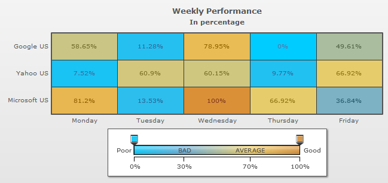

| Quick Links (within this page) |
| Heat Map chart looks as under: |
|  |
| Sample XML /JSON for Heat Map chart: |
<chart caption='Weekly Percentage' subCaption='In percentage'> {
"chart":{
"caption":"Weekly Percentage",
"subcaption":"In percentage"
},
"rows":{
"row":[{
"id":"Google",
"label":"Google US"
},
{
"id":"Yahoo",
"label":"Yahoo US"
},
{
"id":"Microsoft",
"label":"Microsoft US"
}
]
},
"columns":{
"column":[{
"id":"MON",
"label":"Monday"
},
{
"id":"TUE",
"label":"Tuesday"
},
{
"id":"WED",
"label":"Wednesday"
},
{
"id":"THU",
"label":"Thursday"
},
{
"id":"FRI",
"label":"Friday"
}
]
},
"dataset":[{
"data":[{
"rowid":"Yahoo",
"columnid":"Mon",
"value":"0"
},
{
"rowid":"Yahoo",
"columnid":"Tue",
"value":"71"
},
{
"rowid":"Yahoo",
"columnid":"Wed",
"value":"70"
},
{
"rowid":"Yahoo",
"columnid":"Thu",
"value":"3"
},
{
"rowid":"Yahoo",
"columnid":"Fri",
"value":"79"
},
{
"rowid":"Google",
"columnid":"Mon",
"value":"68"
},
{
"rowid":"Google",
"columnid":"Tue",
"value":"5"
},
{
"rowid":"Google",
"columnid":"Wed",
"value":"95"
},
{
"rowid":"Google",
"columnid":"Thu",
"value":"-10"
},
{
"rowid":"Google",
"columnid":"Fri",
"value":"55.98"
},
{
"rowid":"Microsoft",
"columnid":"Mon",
"value":"98"
},
{
"rowid":"Microsoft",
"columnid":"Tue",
"value":"8"
},
{
"rowid":"Microsoft",
"columnid":"Wed",
"value":"123"
},
{
"rowid":"Microsoft",
"columnid":"Thu",
"value":"79"
},
{
"rowid":"Microsoft",
"columnid":"Fri",
"value":"39"
}
]
}
],
"colorrange":{
"mapbypercent":"1",
"gradient":"1",
"minvalue":"0",
"code":"00CCFF",
"startlabel":"Poor",
"endlabel":"Good",
"color":[{
"code":"66ADD9",
"maxvalue":"30",
"label":"BAD"
},
{
"code":"F2CF63",
"maxvalue":"70",
"label":"AVERAGE"
},
{
"code":"D99036",
"maxvalue":"100",
}
]
}
}
|
| Back to top |
| Chart Objects |
| Object Name | Description | Features Supported | Animation Parameters Supported |
| BACKGROUND | BACKGROUND refers to the entire background of the chart. |
|
|
| CANVAS | In 2D Charts, CANVAS refers to the area in which the actual chart is plotted. It is represented by a bounded rectangle. In 3D charts, it refers to the 3D base on which the columns are built. |
|
|
| CAPTION | CAPTION refers to the heading of the chart. |
|
|
| DATAXLABELS | DATAXLABELS refer to the x-axis labels of the data. |
|
|
| DATAYLABELS | DATAYLABELS refer to the y-axis labels of the data. |
|
|
| DATAPLOT | DATAPLOT refers to the actual plot of the chart. For example, in Column 2D chart, columns are referred to as DATAPLOT. In Pie chart, it's the pies. In Bubble chart, it's the bubbles and so on. |
|
|
| HOVERPLOT | HOVERPLOT refers to the visual effect which appears when the mouse cursor is hovered on the data plots. |
|
|
| DATAVALUES | DATAVALUES refer to the plot values i.e., value of each data (line, column, bar, pie etc.), which is displayed beside the data plot. |
|
|
| HDIVLINES | HDIVLINES are horizontal lines running through the canvas. Each divisional line signifies a smaller unit of the entire y-axis thus aiding the users in interpreting the chart. |
|
|
| VDIVLINES | VDIVLINES are vertical lines running through the canvas. Each divisional line signifies a smaller unit of the entire x-axis thus aiding the users in interpreting the chart. |
|
|
| HGRID | HGRID refers to alternate color bands between two successive horizontal divisional lines. |
|
|
| VGRID | VGRID refers to alternate color bands between two successive vertical divisional lines. |
|
|
| LEGEND | LEGEND is the object in which the series names of all data-sets show up. |
|
|
| SUBCAPTION | SUBCAPTION refers to the sub-heading of the chart. |
|
|
| TOOLTIP | TOOLTIP refers to the tool tip shown when mouse is hovered over the data plots. |
|
|
| XAXISNAME | XAXISNAME refers to the x-axis title of the chart. |
|
|
| YAXISNAME | YAXISNAME refers to the y-axis title of the chart. |
|
|
| TLDATAVALUES | TLDATAVALUES refers to the label or value which is displayed on the top-left corner of the data plots. |
|
|
| TRDATAVALUES | TRDATAVALUES refers to the label or value which is displayed on the top-right corner of the data plots. |
|
|
| BLDATAVALUES | BLDATAVALUES refers to the label or value which is displayed on the bottom-left corner of the data plots. |
|
|
| BRDATAVALUES | BRDATAVALUES refers to the label or value which is displayed on the bottom-right corner of the data plots. |
|
|
| Back to top | |||
| <chart> element Attributes |
| Functional Attributes |
|
These attributes let you control a variety of functional elements on the chart. For example, you can opt to show/hide data labels, data values, y-axis values. You can also set chart limits and extended properties. |
| Attribute Name | Type | Range | Description |
| animation | Boolean | 0/1 | This attribute gives you the option to control animation in your charts. If you do not want to animate any part of the chart, set this as 0. |
| palette | Number | 1-5 | FusionCharts v3 introduces the concept of Color Palettes. Each chart has 5 pre-defined color palettes which you can choose from. Each palette renders the chart in a different color theme. Valid values are 1-5. |
| paletteColors | String | List of hex color codes separated by comma | While the palette attribute allows to select a palette theme that applies to chart background, canvas, font and tool-tips, it does not change the colors of data items (i.e., column, line, pie etc.). Using paletteColors attribute, you can specify your custom list of hex colors for the data items. The list of colors have to be separated by comma e.g., <chart paletteColors='FF0000,0372AB,FF5904...'>. The chart will cycle through the list of specified colors and then render the data plot accordingly. To use the same set of colors throughout all your charts in a web application, you can store the list of palette colors in your application globally and then provide the same in each chart XML. |
| showAboutMenuItem | Boolean | 0/1 | Setting this to 1 shows up a custom context menu in the chart, which can be customized to show your text and can be linked to your Url. For e.g., you can set the context menu of the chart to include "About your company name" and then link to your company home page. By default, the chart shows "About FusionCharts" when right clicked. |
| aboutMenuItemLabel | String | The menu item label for the custom context menu item. | |
| aboutMenuItemLink | String | URL | Link for the custom context menu item. You can specify the link in FusionCharts Link Format to be able to open the same in new window, pop-ups, frames or as JavaScript links. |
| showLabels | Boolean | 0/1 | It sets the configuration whether the x-axis labels will be displayed or not. |
| xAxislabelDisplay | String | AUTO WRAP STAGGER ROTATE or NONE |
Using this attribute, you can customize the alignment of data labels (x-axis labels). There are 5 options: AUTO, WRAP, STAGGER, ROTATE or NONE. By default, this attribute is set to AUTO mode which means that the alignment of the data labels is determined automatically depending on the size of the chart. WRAP wraps the label text if it is too long to fit in one line. ROTATE rotates the labels vertically. STAGGER divides the labels into multiple lines. |
| maxLabelWidhPercent | Numeric | In Pixels | When the y-axis labels are two long this attribute is used to set the maximum space in which the labels are used to fit in. If the label is longer than the space it is broken and displayed in separate lines. |
| useEllipsesWhenOverflow | Boolean | 0/1 | When enabled in auto mode, long data labels are truncated by adding ellipses to prevent them from overflowing the chart background. The default value is 1. |
| trType | String | Specifies the type of data provided in the top-right label. This value is displayed in the tooltip. | |
| tlType | String | Specifies the type of data provided in the top-left label. This value is displayed in the tooltip. | |
| brType | String | Specifies the type of data provided in the bottom-right label. This value is displayed in the tooltip. | |
| blType | String | Specifies the type of data provided in the bottom-left label. This value is displayed in the tooltip. | |
| showTooltipforWrappedLabels | Boolean | 0/1 | When the labels of the chart are too lengthy, the chart truncates them and displays a part of the label. In this situation, this attribute shows a tooltip displaying the complete label when the mouse is hovered on the shortened labels. |
| rotatexAxisLabels | Boolean | 0/1 | This attribute lets you set whether the data labels would show up as rotated labels on the chart. |
| slantxAxisLabels | Boolean | 0/1 | If you've opted to show rotated labels on chart, this attribute lets you set the configuration whether the labels would show as slanted labels or fully vertical ones. |
| xAxislabelStep | Number | 1 or above | By default, all the labels are displayed on the chart. However, if you've a set of streaming data (like name of months or days of week), you can opt to hide every n-th label for better clarity. This attributes just lets you do so. It allows to skip every n(th) X-axis label. |
| yAxislabelStep | Number | 1 or above | By default, all the labels are displayed on the y axis of the chart. However, if you've a set of streaming data (like name of months or days of week), you can opt to hide every n-th label for better clarity. This attribute just lets you do so. It allows to skip every n(th) X-axis label. |
| showYaxisLabels | Boolean | 0/1 | This attribute is used to show or hide y axis or the row labels. |
| showXaxisLabels | Boolean | 0/1 | This attribute is used to show or hide the x axis or the column labels. |
| staggerxAxisLines | Number | 2 or above | If you've opted for STAGGER mode as labelDisplay, using this attribute you can control how many lines to stagger the label to. By default, all labels are displayed in a single line. |
| showValues | Boolean | 0/1 | Sets the configuration whether data values would be displayed along with the data plot on chart. |
| rotateValues | Boolean | 0/1 | If you've opted to show data values, you can rotate them using this attribute. |
| showLimits | Boolean | 0/1 | Whether to show chart limit values. showYAxisValues is the single new attribute in v3 which over-rides this value. |
| showDivLineValues | Boolean | 0/1 | Whether to show div line values. showYAxisValues is the single new attribute in v3 which over-rides this value. |
| showShadow | Boolean | 0/1 | Whether to show shadows for data plot. |
| rotateYAxisName | Boolean | 0/1 | If you do not wish to rotate y-axis name, set this as 0. It specifically comes to use when you've special characters (UTF8) in your y-axis name that do not show up in rotated mode. |
| yAxisNameWidth | Number | (In Pixels) | If you opt to not rotate y-axis name, you can choose a maximum width that will be applied to y-axis name. |
| clickURL | String | The entire chart can now act as a hotspot. Use this Url to define the hotspot link for the chart. The link can be specified in FusionCharts Link Format. | |
| defaultAnimation | Boolean | 0/1 | By default, each chart animates some of its elements. If you wish to switch off the default animation patterns, you can set this attribute to 0. It can be particularly useful when you want to define your own animation patterns using STYLE feature. |
| interactiveAnimationDuration | Number | Sets the duration of the animation that takes place when the legends are used to show or hide data plots. | |
| mapByCategory | Boolean | 0/1 | Allows you to render a category based heat map chart. |
| showHoverEffect | Boolean | 0/1 | Sets a style effect on the data plots when the mouse is hovered on the data plots. By default, it show a bevel effect. |
| plotFillAlpha | Numeric | 0-100 | Sets the transparency of all the data plots in the chart. |
| unescapeLinks | Boolean | 0/1 | Internally the chart decodes a Url that you set as link. Before invoking the link it again encodes the Url. If you are passing multilingual characters via a Url or do not want this decode-encode mechanism to be handled by chart you can set,unescapeLinks='0'. |
| showPrintMenuItem | Boolean | 0/1 | When you write click on the chart it shows a context menu. This attribute allows you to show or hide the "Print" option in the context menu |
| Back to top | |||
| Chart Titles and Axis Names |
|
Using these attributes, you can set the various headings and titles of chart like caption, sub-caption, x-axis and y-axis names etc. |
| Attribute Name | Type | Description |
| caption | String | Caption of the chart. |
| subCaption | String | Sub-caption of the chart. |
| xAxisName | String | X-Axis Title of the Chart. |
| yAxisName | String | Y-Axis Title of the chart. |
| Back to top | ||
| Chart Cosmetics |
|
The following attributes let you configure chart cosmetics like background color, background alpha, canvas color & alpha etc. |
| Attribute Name | Type | Range | Description |
| showBorder | Boolean | 0/1 | Whether to show a border around the chart or not. |
| borderColor | Color | Border color of the chart. | |
| borderThickness | Number | In Pixels | Border thickness of the chart. |
| borderAlpha | Number | 0-100 | Border alpha of the chart. |
| bgColor | Color | This attribute sets the background color for the chart. You can set any hex color code as the value of this attribute. To specify a gradient as background color, separate the hex color codes of each color in the gradient using comma. Example: FF5904,FFFFFF. Remember to remove # and any spaces in between.See FusionCharts v3 Basics > Advanced Charting > Using Gradients for more details. | |
| bgAlpha | Number | 0-100 | Sets the alpha (transparency) for the background. If you've opted for gradient background, you need to set a list of alpha(s) separated by comma.See FusionCharts v3 Basics > Advanced Charting > Using Gradients for more details. |
| bgRatio | Number | 0-100 | If you've opted for a gradient background, this attribute lets you set the ratio of each color constituent.See FusionCharts v3 Basics > Advanced Charting > Using Gradients for more details. |
| bgAngle | Number | 0-360 | Angle of the background color, in case of a gradient.See FusionCharts v3 Basics > Advanced Charting > Using Gradients for more details. |
| bgSWF | String | To place any Flash movie as background of the chart, enter the (path and) name of the background SWF. It should be in the same domain as the chart. | |
| bgSWFAlpha | Number | 0-100 | Helps you specify alpha for the loaded background SWF. |
| canvasBgColor | Color | Sets Canvas background color. For Gradient effect, enter colors separated by comma. | |
| canvasBgAlpha | Number | Sets alpha for Canvas Background. For gradient, enter alpha list separated by commas. | |
| canvasBgRatio | Number | 0-100 | Helps you specify canvas background ratio for gradients. |
| canvasBgAngle | Number | Helps you specify canvas background angle in case of gradient. | |
| canvasBorderColor | Color | Lets you specify canvas border color. | |
| canvasBorderThickness | Number | 0-5 | Lets you specify canvas border thickness. |
| canvasBorderAlpha | Number | 0-100 | Lets you control transparency of canvas border. |
| showVLineLabelBorder | Boolean | 0/1 | If you've opted to show a label for any of your vLines in the chart, you can collectively configure whether to show border for all such labels using this attribute. If you want to show label border for just a particular vLine, you can over-ride this value by specifying border configuration for that specific vLine. |
| logoURL | String | Url | You can load an external logo (JPEG/PNG/SWF) on the chart once it has rendered. This attribute lets you specify the Url of the same. Owing to Flash Player security settings, you can only specify logo that are on the sub-domain as the SWF file of the chart. |
| logoPosition | String | TL, TR, BL, BR, CC | Where to position the logo on the chart:
|
| logoAlpha | Number | 0-100 | Once the logo has loaded on the chart, you can configure its opacity using this attribute. |
| logoScale | Number | 0-300 | You can also change the scale of externally loaded logo at run-time by specifying a value for this parameter. |
| logoLink | String | Url | If you want to link the logo to an external URL, specify the link in this attribute. The link can be in FusionCharts Link Format, allowing you to link to new windows, pop-ups, frames etc. |
| Back to top | |||
| Data Plot Cosmetics |
|
These attributes let you configure how your plot (columns, lines, area, pie or any data that you're plotting) would appear on the chart. If the plots can show borders, you can control the border properties using the attributes listed below. Or, if they support gradient fills, you can again configure various properties of the gradient using these attributes. Various other controls over plot cosmetics can be attained using this set of attributes. |
| Attribute Name | Type | Range | Description |
| showPlotBorder | Boolean | 0/1 | Whether the column, area, pie etc. border would show up. |
| plotBorderColor | Color | Color for column, area, pie border | |
| plotBorderThickness | Number | 0-5 (Pixels) | Thickness for column, area, pie border |
| plotBorderAlpha | Number | 0-100 | Alpha for column, area, pie border |
| plotBorderDashed | Boolean | 0/1 | Whether the plot border should appear as dashed. |
| plotBorderDashLen | Number | In Pixels | If plot border is to appear as dash, this attribute lets you control the length of each dash. |
| plotBorderDashGap | Number | In Pixels | If plot border is to appear as dash, this attribute lets you control the length of each gap between two dash. |
| plotFillAngle | Number | 0-360 | If you've opted to fill the plot (column, area etc.) as gradient, this attribute lets you set the fill angle for gradient. |
| plotFillRatio | Number | 0-100 | If you've opted to fill the plot (column, area etc.) as gradient, this attribute lets you set the ratio for gradient. |
| plotFillAlpha | Number | 0-100 | If you've opted to fill the plot (column, area etc.) as gradient, this attribute lets you set the fill alpha for gradient. |
| plotGradientColor | Color | Hex Color | You can globally add a gradient color to the entire plot of chart by specifying the second color as this attribute. For example, if you've specified individual colors for your columns and now you want a gradient that ends in white. So, specify FFFFFF (white) as this color and the chart will now draw plots as gradient. |
| Back to top | |||
| Divisional Lines & Grids |
|
Using this set of attributes, you can control the properties of divisional lines, zero plane and alternate color bands. Divisional Lines are horizontal or vertical lines running through the canvas. Each divisional line signifies a smaller unit of the entire axis thus aiding the users in interpreting the chart. The zero plane is a 2D/3D plane that signifies the 0 position on the chart. If there are no negative numbers on the chart, you won't see a visible zero plane. Alternate color bands are colored blocks between two successive divisional lines. |
| Attribute Name | Type | Range | Description |
| hdivLineColor | Color | Color for horizontal divisional lines | |
| hdivLineThickness | Number | 1-5 | Thickness of horizontal divisional lines |
| hdivLineAlpha | Number | 0-100 | Alpha of horizontal divisional lines. |
| hdivLineIsDashed | Boolean | 0/1 | Whether the horizontal divisional lines should display as dash. |
| hdivLineDashLen | Number | In Pixels | If the horizontal divisional lines are to be displayed as dash, this attribute lets you control the length of each dash. |
| hdivLineDashGap | Number | In Pixels | If the horizontal divisional lines are to be displayed as dash, this attribute lets you control the length of each gap between dash. |
| vdivLineColor | Color | Color for vertical divisional lines | |
| vdivLineThickness | Number | 1-5 | Thickness of vertical divisional lines divisional lines |
| vdivLineAlpha | Number | 0-100 | Transparency of vertical divisional lines |
| vdivLineIsDashed | Boolean | 0/1 | Whether the vertical divisional lines should display as dash. |
| vdivLineIsDashlen | Number | In Pixels | If the vertical divisional lines are to be displayed as dash, this attribute lets you control the length of each dash. |
| vdivLineDashGap | Number | In Pixels | If the horizontal divisional lines are to be displayed as dash, this attribute lets you control the length of each gap between dash. |
| showAlternateHGridColor | Boolean | 0/1 | Whether to show alternate colored horizontal grid bands. |
| alternateHGridColor | Color | Color of the alternate horizontal grid bands. | |
| alternateHGridAlpha | Number | Alpha (transparency) of the alternate horizontal grid bands. | |
| showAlternateVGridColor | Boolean | 0/1 | Whether to show alternate colored vertical grid bands. |
| alternateVGridColor | Color | Color of the alternate vertical grid bands. | |
| alternateVGridAlpha | Number | 0-100 | Transparency of the alternate vertical grid lines. |
| Back to top | |||
| Chart Padding & Margins |
|
The following attributes help you control chart margins and paddings. FusionCharts v3 allows you manually customize the padding of various elements on the chart to allow advanced manipulation and control over chart visualization. Padding in FusionCharts is always defined in pixels, unless the attribute itself suggests some other scale (like plotSpacePercent). You can also define the chart margins. Chart Margins refer to the empty space left on the top, bottom, left and right of the chart. That means, FusionCharts wouldn't plot anything in that space. It's not necessary for you to specify any padding/margin values. FusionCharts automatically assumes the best values for the same, if you do not specify the same. |
| Attribute Name | Type | Range | Description |
| captionPadding | Number | In Pixels | This attribute lets you control the space (in pixels) between the sub-caption and top of the chart canvas. If the sub-caption is not defined, it controls the space between caption and top of chart canvas. If neither caption, nor sub-caption is defined, this padding does not come into play. |
| xAxisNamePadding | Number | In Pixels | Using this, you can set the distance between the top end of x-axis title and the bottom end of data labels (or canvas, if data labels are not to be shown). |
| yAxisNamePadding | Number | In Pixels | Using this, you can set the distance between the right end of y-axis title and the start of y-axis values (or canvas, if the y-axis values are not to be shown). |
| labelxPadding | Number | In Pixels | This attribute sets the vertical space between the x-axis labels and canvas bottom edge. |
| labelyPadding | Number | In Pixels | It sets the horizontal space between the y-axis labels and the canvas right edge. |
| chartLeftMargin | Number | In Pixels | Amount of empty space that you want to put on the left side of your chart. Nothing is rendered in this space. |
| chartRightMargin | Number | In Pixels | Amount of empty space that you want to put on the right side of your chart. Nothing is rendered in this space. |
| chartTopMargin | Number | In Pixels | Amount of empty space that you want to put on the top of your chart. Nothing is rendered in this space. |
| chartBottomMargin | Number | In Pixels | Amount of empty space that you want to put on the bottom of your chart. Nothing is rendered in this space. |
| legendPadding | Number | In Pixels | Padding of legend from right/bottom side of canvas |
| canvasLeftMargin | Number | In Pixels | This attribute lets you control the space between the start of chart canvas and the start (x) of chart. In case of 2D charts, the canvas is the visible rectangular box. In case of 3D charts, the canvas box is the imaginary box around the 3D canvas.
Using this attribute, you can control the amount of empty space between the chart left side and canvas left side. By default, FusionCharts automatically calculates this space depending on the elements to be placed on the chart. However, if you want to over-ride this value with a higher value, you can use this attribute to specify the same. Please note that you cannot specify a margin lower than what has been calculated by the chart. This attribute is particularly useful, when you've multiple charts placed in a page and want all their canvas start position to align with each other - so in such a case, you can set same margin value (a value large enough that it doesn't get rejected by chart owing to it being lower than the calculated value) for all such charts in the page. |
| canvasRightMargin | Number | In Pixels | Like canvasLeftMargin, this attribute lets you set the space between end of canvas and end of chart. |
| canvasTopMargin | Number | In Pixels | Like canvasLeftMargin, this attribute lets you set the space between top of canvas and top of chart. |
| canvasBottomMargin | Number | In Pixels | Like canvasLeftMargin, this attribute lets you set the space between bottom of canvas and bottom of chart. |
| Back to top | |||
| Tool-tip |
|
These attributes let you control the tool tip. You can set the background color, border color, separator character and few other details. |
| Attribute Name | Type | Range | Description |
| showToolTip | Boolean | 0/1 | Whether to show tool tip on chart. |
| toolTipBgColor | Color | Background Color for tool tip. | |
| toolTipBorderColor | Color | Border Color for tool tip. | |
| toolTipSepChar | String | The character specified as the value of this attribute separates the name and value displayed in tool tip. | |
| showColumnIdInToolTip | Boolean | 0/1 | Displays the column id in the tooltip. |
| showRowIdInToolTip | Boolean | 0/1 | Displays the row id in the tooltip. |
| showToolTipShadow | Boolean | 0/1 | Whether to show shadow for tool-tips on the chart. |
| Back to top | |||
| Legend Properties |
|
In multi-series charts, the series name of each data-set shows up in the legend of the chart. If you do not need the legend, you can opt to hide the same. Also, the legend can be placed at the bottom of the chart or to the right of the chart. Using the attributes below, you can configure the functional and cosmetic properties of the legend. |
| Attribute Name | Type | Range | Description |
| showLegend | Boolean | 0/1 | Whether to show legend on the chart. |
| legendCaption | String | You can add a caption for the entire legend by setting the same here. | |
| legendIconScale | Number | 0-5 | Scaling of legend icon is possible starting FusionCharts v3.2. This attribute lets you control the size of legend icon. |
| legendPosition | String | BOTTOM or RIGHT | The legend can be plotted at two positions on the chart - below the chart (BOTTOM) and on the RIGHT side of the chart. |
| legendBgColor | Color | Hex Code | Background color for the legend. |
| legendBgAlpha | Number | 0-100 | Background alpha for the legend. |
| legendBorderColor | Color | Hex Code | Border Color for the legend. |
| legendBorderThickness | Number | In Pixels | Border thickness for the legend. |
| legendBorderAlpha | Number | 0-100 | Border alpha for the legend. |
| legendShadow | Boolean | 0/1 | Whether to show a shadow for legend. |
| legendAllowDrag | Boolean | 0/1 | The legend can be made drag-able by setting this attribute to 1. End viewers of the chart can drag the legend around on the chart. |
| legendScrollBgColor | Color | Hex Code | If you've too many items on the legend, a scroll bar shows up on the same. This attribute lets you configure the background color of the scroll bar. |
| legendScrollBarColor | Color | Hex Code | If you've too many items on the legend, a scroll bar shows up on the same. This attribute lets you configure the bar color of the scroll bar. |
| legendScrollBtnColor | Color | Hex Code | If you've too many items on the legend, a scroll bar shows up on the same. This attribute lets you configure the color of buttons of the scroll bar. |
| reverseLegend | Boolean | 0/1 | You can reverse the ordering of datasets in the legend by setting this attribute to 1. |
| interactiveLegend | Boolean | 0/1 | This attribute lets you interact with the legend in your chart. When you click a legend key, the dataplots associated with that series are eliminated from the chart. Re-clicking the key causes the dataplots to reappear. |
| legendNumColumns | Number | Positive Integer | If your chart contains multiple series, the legend is displayed as a grid comprising of multiple legend keys. With the help of this attribute you can specify the number of columns that are to be displayed in the legend. |
| minimiseWrappingInLegend | Boolean | 0/1 | Whether to minimize legend item text wrapping. |
| legendPointerWidth | Numeric | Allows you to set the width of the gradient legend pointers. | |
| legendPointerHeight | Numeric | Allows you to set the height of the gradient legend pointers. | |
| snapLegendPointers | Boolean | 0/1 | Allows you to snap the gradient legend pointers exactly on the tick when released on a near by position. |
| legendSnapRange | Numeric | 0-5 | Allows you to set the snapping range of the gradient legend pointers. |
| legendScaleLineColor | Hex Code | Allows you to set the color of the scale in gradient legend. | |
| legendScaleLineAlpha | Numeric | 0-100 | Allows you to set the transparency of the scale in gradient legend. |
| legendScaleLineThickness | Numeric | Allows you to set the thickness of the scale in gradient legend. | |
| autoOrderLegendIcon | Boolean | 0/1 | Allows you to show the legend icon in ascending order in icon legend. |
| Back to top | |||
| Number Formatting |
|
FusionCharts v3 offers you a lot of options to format your numbers on the chart. Using the attributes below, you can control a myriad of options like:
|
| Attribute Name | Type | Range | Description |
| formatNumber | Boolean | 0/1 | This configuration determines whether the numbers displayed on the chart will be formatted using commas, e.g., 40,000 if formatNumber='1' and 40000 if formatNumber='0' |
| formatNumberScale | Boolean | 0/1 | Configuration whether to add K (thousands) and M (millions) to a number after truncating and rounding it - e.g., if formatNumberScale is set to 1, 1043 would become 1.04K (with decimals set to 2 places). Same with numbers in millions - a M will added at the end. For more details, please see FusionCharts v3 Basics > Advanced Charting > Number Formatting section. |
| defaultNumberScale | String | The default unit of the numbers that you're providing to the chart. For more details, please see FusionCharts v3 Basics > Advanced Charting > Number Formatting section. | |
| numberScaleUnit | String | Unit of each block of the scale. For more details, please see FusionCharts v3 Basics > Advanced Charting > Number Formatting section. | |
| numberScaleValue | String | Range of the various blocks that constitute the scale. For more details, please see FusionCharts v3 Basics > Advanced Charting > Number Formatting section. | |
| numberPrefix | String | Character | Using this attribute, you could add prefix to all the numbers visible on the graph. For example, to represent all dollars figure on the chart, you could specify this attribute to ' $' to show like $40000, $50000. For more details, please see FusionCharts v3 Basics > Advanced Charting > Number Formatting section. |
| numberSuffix | String | Character | Using this attribute, you could add a suffix to all the numbers visible on the graph. For example, to represent all figure quantified as per annum on the chart, you could specify this attribute to ' /a' to show like 40000/a, 50000/a. For more details, please see FusionCharts v3 Basics > Advanced Charting > Number Formatting section. |
| decimalSeparator | String | Character | This option helps you specify the character to be used as the decimal separator in a number. For more details, please see FusionCharts v3 Basics > Advanced Charting > Number Formatting section. |
| thousandSeparator | String | Character | This option helps you specify the character to be used as the thousands separator in a number. For more details, please see FusionCharts v3 Basics > Advanced Charting > Number Formatting section. |
| inDecimalSeparator | String | Character | In some countries, commas are used as decimal separators and dots as thousand separators. In XML, if you specify such values, it will give a error while converting to number. So, FusionCharts accepts the input decimal and thousand separator from user, so that it can covert it accordingly into the required format. This attribute lets you input the decimal separator. For more details, please see FusionCharts v3 Basics > Advanced Charting > Number Formatting section. |
| inThousandSeparator | String | Character | In some countries, commas are used as decimal separators and dots as thousand separators. In XML, if you specify such values, it will give a error while converting to number. So, FusionCharts accepts the input decimal and thousand separator from user, so that it can covert it accordingly into the required format. This attribute lets you input the thousand separator. For more details, please see FusionCharts v3 Basics > Advanced Charting > Number Formatting section. |
| decimals | Number | 0-10 | Number of decimal places to which all numbers on the chart would be rounded to. |
| forceDecimals | Boolean | 0/1 | Whether to add 0 padding at the end of decimal numbers. For example, If you limit the maximum number of decimal digits to 2, a number like 55.345 will be rounded to 55.34. This does not mean that all numbers will be displayed with a fixed number of decimal places. For instance 55 will not be displayed as 55.00 and 55.1 will not become 55.10. In order to have fixed number of decimal places attached to all the numbers, set this attribute to 1. |
| forceYAxisValueDecimals | Boolean | 0/1 | Whether to forcefully attach decimal places to all y-axis values. For example, If you limit the maximum number of decimal digits to 2, a number like 55.345 will be rounded to 55.34. This does not mean that all y-axis numbers will be displayed with a fixed number of decimal places. For instance 55 will not be displayed as 55.00 and 55.1 will not become 55.10. In order to have fixed number of decimal places attached to all y-axis numbers, set this attribute to 1. |
| yAxisValueDecimals | Number | 0-10 | If you've opted to not adjust div lines, you can specify the div line values decimal precision using this attribute. |
| Back to top | |||
| Font Properties |
|
Using the attributes below, you can define the generic font properties for all the text on the chart. These attributes allow you a high level control over font properties. If you intend to specify font properties for individual chart elements (like Caption, sub-caption etc.), you'll need to use the STYLES feature of FusionCharts v3. Using STYLES, you can also specify advanced font properties like Bold, Italics, HTML Mode etc. |
| Attribute Name | Type | Range | Description |
| baseFont | String | Font Name | This attribute lets you set the font face (family) of all the text (data labels, values etc.) on chart. If you specify outCnvBaseFont attribute also, then this attribute controls only the font face of text within the chart canvas bounds. |
| baseFontSize | Number | 0-72 | This attribute sets the base font size of the chart i.e., all the values and the names in the chart which lie on the canvas will be displayed using the font size provided here. |
| baseFontColor | Color | This attribute sets the base font color of the chart i.e., all the values and the names in the chart which lie on the canvas will be displayed using the font color provided here. | |
| outCnvBaseFont | String | Font Name | This attribute sets the base font family of the chart font which lies outside the canvas i.e., all the values and the names in the chart which lie outside the canvas will be displayed using the font name provided here. |
| outCnvBaseFontSize | Number | 0-72 | This attribute sets the base font size of the chart i.e., all the values and the names in the chart which lie outside the canvas will be displayed using the font size provided here. |
| outCnvBaseFontColor | Color | This attribute sets the base font color of the chart i.e., all the values and the names in the chart which lie outside the canvas will be displayed using the font color provided here. | |
| Back to top | |||
| <rows> --><row> |
The <row> element within a <rows> element allows you to set a pre-defined order of rows in which the data plots are to be displayed in the chart. There are no attributes used for the <rows> element. The attributes of the <row> element are mentioned below: |
| Attributes of <row> element | |||
| Attribute Name | Type | Range | Description |
| Id | Number/String | Allows you to specify a unique Id for the rows. This id is used in the <set> element to place the data values in the pre-defined position. | |
| Label | String | Allows you to specify a label for the rows. If you do not specify the label the unique id will be displayed as the label for the rows in the chart. | |
| showLabel | String | Allows you to show or hide the label of a particular row. | |
| Back to top | |||
| <columns> --><column> |
The <column> element within a <columns> element allows you to set a pre-defined order of columns in which the data plots are to be displayed in the chart. There are no attributes used for the <columns> element. The attributes of the <column> element are mentioned below: |
| Attributes of <column> element | |||
| Attribute Name | Type | Range | Description |
| Id | Number/String | Allows you to specify a unique Id for the columns. This id is used in the <set> element to place the data values in the pre-defined position. | |
| Label | String | Allows you to specify a label for the columns. If you do not specify the label the unique id will be displayed as the label for the rows in the chart. | |
| showLabel | String | Allows you to show or hide the label of a particular column. | |
| Back to top | |||
| <dataset> --> <set> element |
|
The <dataset> element contains a series of data defined through the <set> elements. There are no attributes for <dataset> element. The attributes used for the <set> element are mentioned below: |
| Attributes of <set> element | |||
| Attribute Name | Type | Range | Description |
| rowId | String | Specifies the position of the row where the data it is to be placed in the chart. If the <rows> element is used then it is mandatory to use the same id which is defined in the <row> element by the Id attribute. | |
| ColumnId | String | Specifies the position of the column where the data it is to be placed in the chart. If the <columns> element is used then it is mandatory to use the same id which is defined in the <column> element by the Id attribute. | |
| colorRangeLabel | String | This attribute is used to provide the color-range label which is defined in the <color> element of <colorRange> element. It is used only in category based heat map chart. | |
| value | Number | This attribute allows you to display a value at the center of a data plot. | |
| displayValue | Number/String | Allows you to display any numeric value or string at the center of the dataplot. The settings of this attribute overwrites the settings of the value attribute when both are used at the same time. | |
| tlLabel | Number/String | This attribute allows you to display a label on the top-left corner of a data plot. | |
| trLabel | Number/String | This attribute allows you to display a label on the top-right corner of a data plot. | |
| blLabel | Number/String | This attribute allows you to display a label on the bottom-left corner of a data plot. | |
| brLabel | Number/String | This attribute allows you to display a label on the bottom-left corner of a data plot. | |
| color | Color | Hex Code | In heat map chart, if you wish to highlight a particular cell, you can specify it's color at "set" level using this attribute. This attribute accepts hex color codes without #. |
| link | String | You can define links for individual data items. That enables the end user to click on data items (columns, lines, bars etc.) and drill down to other pages. To define the link for data items, use the link attribute. You can define links that open in same window, new window, pop-up window or frames. Please see "Drill Down Charts > FusionCharts Link format" for more information. Also, you'll need to Url Encode all the special characters (like ? and &) present in the link. | |
| toolText | String | By default, Heat map chart shows the value or display value as tool tip text for that data item. It also includes all the values provided through trLabel, tlLabel, brlabel and bllabel attributes along with the values of trType, tlType, brType and blType attributes. Click here to see how a default tool tip looks like when all the above attributes are provided. But, if you want to display more information or if you want to provide customized information for the data item as tool tip, you can use this attribute to specify the same. |
|
| showValue | Boolean | 0/1 | You can individually opt to show/hide values of individual data items using this attribute. This value over-rides the data-set level value. |
| alpha | Number | 0-100 | For multi-series charts, you can define the alpha of data-sets at dataset level. However, if you wish to highlight a particular data element, you can specify it's alpha at "set" level using this attribute. |
| Back to top | |||
| <colorRange> element |
The <colorRange> element lets you define numeric ranges or categories and the colors associated with the numeric ranges. The properties used in the <colorRange> element are mentioned below: |
| Attribute Name | Type | Range | Description |
| gradient | Boolean | 0/1 | Allows you to display gradient legend. |
| mapByPercent | Boolean | 0/1 | Allows you to display the data values in percentage. |
| minValue | Number | Sets the minimum value or the lower limit of the numeric range and the gradient scale. | |
| code | Color | Hex Code | Specifies the starting color of the lower limit and the gradient scale. |
| startLabel | String | Specifies the label for the lower limit of the gradient scale. | |
| endLabel | String | Specifies the label for the upper limit of the gradient scale. | |
| Back to top | |||
| <color> element |
|
Each <color> element used in the <colorRange> element defines the upper and lower limit of each numeric range along with the colors associated with the ranges. The properties used are given below: |
| Attribute Name | Type | Range | Description |
| label | String | This attribute determines the label for each numeric range. The label appears either on the gradient scale or on icon legends depending on the legend type used. | |
| code | Color | Hex Code | Sets the color for each numeric range. |
| minValue | Number | Specifies the lower limits of each numeric range. This attribute is mandatory in each <Color> element when icon legend is used. | |
| maxValue | Number | Specifies the upper limits of each numeric range. This attribute is mandatory in each <Color> element for both gradient and icon legend. | |
| Back to top | |||
The chart also accepts the following features, which have not been discussed here:
|